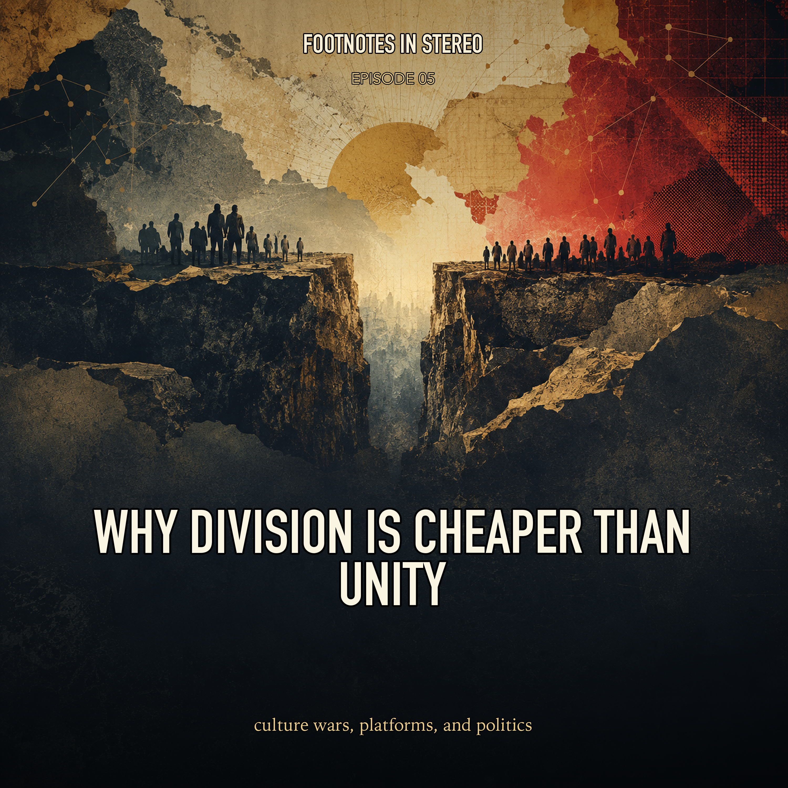

Episode 5 · Public episode
Why Division Is Cheaper Than Unity
Culture wars did not begin with social media, but platforms changed the price, speed, and rewards of political conflict. Mira and Theo trace how identity, moral outrage, engagement incentives, misinformation, microtargeting, elections, activism, and polarized media ecosystems can turn disagreement into durable political machinery, while keeping the causal story careful. Created with Gemini Notebook.
Sources
- 'Network Propaganda' takes a closer look at media and American politics
- Algorithm-Driven Identity Politics: Role of Social Media in Polarisation and Mobilisation
- Beyond True and False: Fake News and the Digital Epistemic Divide
- How tech platforms fuel U.S. political polarization and what government can do about it - Brookings Institution
- Information Fiduciaries and Political Microtargeting: A Legal Framework for Regulating Political Advertising on Digital Platforms
- Moral Grandstanding in Public Discourse: Status-Seeking Motives as a Potential Explanatory Mechanism in Predicting Conflict
- Political Polarization and Moral Outrage on Social Media
- Social Media Seen as Mostly Good for Democracy Across Many Nations, But U.S. is a Major Outlier
- The Algorithmic Management of Polarization and Violence on Social Media
- Misinformation exploits outrage to spread online
- Threats to American Democracy Ahead of an Unprecedented Presidential Election - PRRI
- Using AI Agents to Automate Black-Box Audits of Personalization Algorithms at Scale
Transcript
Machine transcript; lightly formatted and subject to correction.
Transcript processing. Check back shortly.